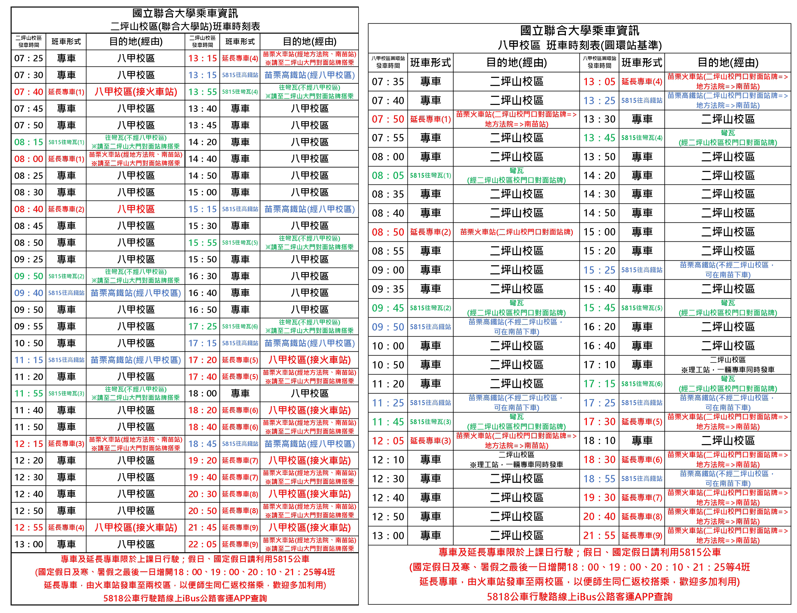

首頁
住宿/租房
交通
食物
補助/獎學金
紓壓小物
聯絡我們
校區往返
二坪山與八甲兩校區相距約2.6公里，車程約5分鐘，校內設有免費接駁專車於週一至週五固定時段往返兩校區接送師生上下學。。
交通路線
交通車發車＆時刻表

開車到聯大
國道一號：苗栗交流道 (132KM) 下匝道→往苗栗方向 (台六線)→經過龜山橋直走→二坪山校區 (距離約3.5公里)→二坪山校區正前方路口處往左轉聯大路直行→八甲校區(總距離約6.3公里)。
國道三號：後龍交流道 (129KM) 下匝道→往苗栗方向 (台六線) →沿台六線直走→二坪山校區 (距離約7公里) →二坪山校區正前方路口處往右轉聯大路直行→八甲校區(總距離約9.8公里)。
搭公車到聯大
搭乘新竹客運聯營車或國光客運、統聯客運在南苗站下車，步行上坡約10分鐘可至本校二坪山校區。
新竹客運：由苗栗火車站或南苗站搭乘往「三義、銅鑼、新雞隆」等線公車(5664 / 5658 )，均可在本校二坪山校區門口之站牌下車。
苗栗客運：由高鐵苗栗站、苗栗火車站或南苗站搭乘往彎瓦(經五湖)之5815號公車，即可直達本校二坪山與八甲校區。
客委會苗栗園區免費接駁專車：平日線（A線），只行駛星期一、二、三、四、五，由高鐵苗栗站開始，途經苗栗火車站-南苗市場-聯合大學-上南勢站-吳濁流藝文館-銅鑼火車站-客委會苗栗園區-銅科站-三義火車站-三義木雕博物館止。
搭火車(苗栗站)到聯大（車程約12分鐘）
計程車：從苗栗火車站搭乘計程車至本校二坪山校區。
新竹客運：由苗栗火車站或南苗站搭乘往「三義、銅鑼、新雞隆」等線公車(5664 / 5658 )，均可在本校二坪山校區門口之站牌下車。
苗栗客運：由高鐵苗栗站、苗栗火車站或南苗站搭乘往彎瓦(經五湖)之5815號公車，即可直達本校二坪山與八甲校區。
客委會苗栗園區免費接駁專車：平日線（A線），只行駛星期一、二、三、四、五，由高鐵苗栗站開始，途經苗栗火車站-南苗市場-聯合大學-上南勢站-吳濁流藝文館-銅鑼火車站-客委會苗栗園區-銅科站-三義火車站-三義木雕博物館止。
搭高鐵(苗栗站)到聯大（車程約25分鐘）
計程車：從高鐵苗栗站搭乘計程車至本校二坪山校區。
高鐵快捷公車：從高鐵苗栗站前方搭乘往雪霸國家公園之101B高鐵快捷公車，可在本校二坪山校區門口前站牌下車。
苗栗客運：從高鐵苗栗站前方搭乘苗栗客運往彎瓦(經五湖)之5815號公車，即可直達本校二坪山與八甲校區。